6. 三层架构
6.1. Introduction
让我们回顾一下最新版本的税款计算应用程序：
using System;
namespace Chap3 {
class Program {
static void Main() {
// 交互式所得税计算程序
// 用户通过键盘输入三项数据：已婚 nbEnfants 工资
// 程序随后显示应缴税额
...
// 创建一个对象 IImpot
IImpot impot = null;
try {
// 创建对象 IImpot
impot = new FileImpot("DataImpotInvalide.txt");
} catch (FileImpotException e) {
// 显示错误
...
// 程序停止
Environment.Exit(1);
}
// 无限循环
while (true) {
// 请求输入税额计算参数
Console.Write("Paramètres du calcul de l'Impot au format : Marié (o/n) NbEnfants Salaire ou rien pour arrêter :");
string paramètres = Console.ReadLine().Trim();
...
// 参数正确 - 正在计算税款
Console.WriteLine("Impot=" + impot.calculer(marié == "o", nbEnfants, salaire) + " euros");
// 下一位纳税人
}//while
}
}
}
之前的解决方案包含编程中的经典处理：
- 从文件、数据库等中读取存储的数据，第12-21行
- 与用户的交互，第26行（数据输入）和第29行（数据显示）
- 业务算法的应用，第29行
实践表明，将这些不同的处理逻辑分离到不同的类中，可以提高应用程序的可维护性。如此结构化的应用程序架构如下：
 |
这种架构被称为“三层架构”，源自英语“three-tier architecture”。“三层”一词通常指每层位于不同机器上的架构。当三层位于同一台机器上时，该架构即成为“三层架构”。
- [metier]层包含应用程序的业务规则。对于我们的税款计算应用程序而言，这些规则用于计算纳税人的应纳税额。该层需要数据才能运行：
- 税率区间（该数据每年都会更新）
- 纳税人的子女数量、婚姻状况及年收入
在上图中，数据可来自两个来源：
- 数据访问层（[dao]，即 DAO = 数据访问对象），用于获取已存储在文件或数据库中的数据。例如，税率区间数据可能就属于此类，这与应用程序的上一版本处理方式一致。
- 用户界面层（[ui]，其中UI代表用户界面），用于处理用户输入或向用户显示的数据。此处可能涉及纳税人的子女数量、婚姻状况及年薪等信息
- 总体而言，[dao]层负责访问持久化数据（文件、数据库）或非持久化数据（网络、传感器等）。
- 而 [ui] 层则负责与用户（如有）的交互。
- 通过使用接口，这三层被设计为相互独立。
我们将重新审视已多次探讨过的 [Impots] 应用程序，并为其构建三层架构。 为此，我们将依次研究 [ui, metier, dao] 的各层，首先从负责持久化数据的 [dao] 层开始。
在此之前，我们需要定义[Impots]应用程序各层的接口。
6.2. [Impots] 应用程序的接口
需要提醒的是，接口定义了一组方法签名。实现该接口的类为这些方法提供了具体实现。
让我们回到应用程序的三层架构：
 |
在此类架构中，通常由用户发起操作。用户通过 [1] 发出请求，并收到 [8] 的响应。这被称为请求-响应循环。以计算纳税人的税款为例，该过程需要多个步骤：
- [ui]层需要向用户询问子女数量、婚姻状况及年薪。这就是上文提到的[1]操作。
- 完成上述步骤后，[ui]层将请求业务层进行税款计算。为此，它会将从用户处接收到的数据传输给业务层。这就是操作[2]。
- [metier]层需要某些信息来完成其工作：即税率区间。它将通过路径[3, 4, 5, 6]向[dao]层请求这些信息。 [3] 是初始请求，而 [6] 是对此请求的响应。
- 在获取所需的所有数据后，[metier]层计算税额。
- [metier] 层现在可以响应 [ui] 层在 (b) 中发出的请求。这就是路径 [7]。
- [ui]层将对这些结果进行格式化处理，然后呈现给用户。这就是路径[8]。
- 可以设想用户进行税务模拟并希望保存这些结果。为此，他将使用路径 [1-8]。
从上述描述中可以看出，一个层会使用其右侧层的资源，但绝不会使用其左侧层的资源。让我们考虑两个相邻的层：
 |
[A]层向[B]层发起请求。 在最简单的情况下，一个层由一个类实现。应用程序会随着时间推移而演变。因此，层 [B] 可能具有不同的实现类 [B1, B2, ...]。 如果 [B] 层是 [dao] 层，那么后者可能有一个初始实现 [B1]，该实现从文件中读取数据。几年后，我们可能希望将数据存入数据库。 此时，我们将构建第二个实现类 [B2]。 如果在最初的应用程序中，[A]层直接与[B1]类进行交互，那么我们就不得不部分重写[A]层的代码。 例如，假设我们在 [A] 层中编写了如下内容：
- 第 1 行：创建 [B1] 类的实例
- 第 3 行：向该实例请求数据
如果假设新的实现类 [B2] 使用的方法签名与类 [B1] 相同，则需要将所有 [B1] 改为 [B2]。 这属于非常理想的情况，但若未注意这些方法签名，这种情况发生的概率相当低。 实际上，[B1] 和 [B2] 这两个类通常不具备相同的方法签名，因此 [A] 层的大部分内容往往需要完全重写。
若在 [A] 和 [B] 层之间添加一个接口，即可改善这一情况。 这意味着将 [B] 层向 [A] 层提供的方法签名固定在接口中。因此，之前的架构图变为如下所示：
 |
[A]层现在不再直接与[B]层通信，而是通过其接口[IB]进行通信。因此，在[A]层的代码中， [B] 层的实现类 [Bi] 仅在实现 [IB] 接口时出现一次。 这样一来，代码中使用的是接口 [IB] 而非其实现类。上述代码变为如下形式：
- 第 1 行：通过实例化类 [B1]，创建了一个实现接口 [IB] 的实例 [ib]
- 第 3 行：向 [ib] 实例请求数据
现在，如果将 [B] 层的 [B1] 实现替换为 [B2] 实现，且这两个实现都遵循相同的 [IB] 接口， 那么只需修改 [A] 层的第 1 行，其他行均无需修改。这本身就是一大优势，足以证明在两个层之间系统地使用接口是合理的。
我们还可以更进一步，使 [A] 层完全独立于 [B] 层。在上面的代码中，第 1 行存在问题，因为它硬编码引用了 [B1] 类。 理想情况下，[A]层应能使用[IB]接口的实现，而无需指定具体类名。这将与我们上文的架构图保持一致。 我们可以看到，[A]层面向[IB]接口，且无法理解它为何需要知道实现该接口的类名。这一细节对[A]层而言毫无用处。
Spring框架（http://www.springframework.org）可实现这一效果。上述架构演变如下：
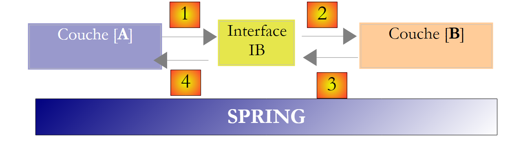 |
横向层 [Spring] 将使某一层能够通过配置获取其右侧层的引用，而无需知道该层的实现类名称。 该名称将保存在配置文件中，而非 C# 代码中。因此，[A] 层的 C# 代码形式如下：
- 第 1 行：一个 [ib] 实例，该实例实现了 [B] 层中的 [IB] 接口。该实例由 Spring 根据配置文件中的信息创建。Spring 将负责创建：
- 实现 [B] 层的 [b] 实例
- 实现 [A] 层的 [a] 实例。该实例将被初始化。 上文中的 [ib] 字段将接收实现 [B] 层的对象的引用 [b]
- 第 3 行：向 [ib] 实例请求数据
现在可以看到，B层的实现类[B1]在[A]层的代码中完全未出现。 当实现类 [B1] 被新的实现类 [B2] 替换时，类 [A] 的代码将保持不变。 我们只需修改 Spring 的配置文件，将实例化对象从 [B1] 更改为 [B2]。
Spring与C#接口的结合通过实现各层之间的隔离，为应用程序的维护带来了决定性的改进。我们将采用这一方案来开发应用程序的新版本[Impots]。
让我们回到应用程序的三层架构：
 |
在简单情况下，我们可以从 [metier] 层开始，以此探索应用程序的接口。该层运行时需要数据：
- 这些数据可能已存在于文件、数据库中，或通过网络获取。它们由 [dao] 层提供。
- 尚未可用。此时由 [ui] 层提供，该层从应用程序用户处获取数据。
[dao]层应向[metier]层提供哪些接口？这两个层之间可能存在哪些交互？[dao]层应向[metier]层提供以下数据：
- 税率区间
在我们的应用程序中，[dao]层利用现有数据，但不创建新数据。[dao]层的接口定义可能如下：
using Entites;
namespace Dao {
public interface IImpotDao {
// 税率区间
TrancheImpot[] TranchesImpot{get;}
}
}
- 第 3 行：[dao] 层将位于 [Dao] 命名空间中
- 第 6 行：接口 IImpotDao 定义了属性 TranchesImpot，该属性将向层 [métier] 提供税率区间。
- 第 1 行：导入定义结构 TrancheImpot 的命名空间：
namespace Entites {
// 一个税率区间
public struct TrancheImpot {
public decimal Limite { get; set; }
public decimal CoeffR { get; set; }
public decimal CoeffN { get; set; }
}
}
让我们回到应用程序的三层架构：
 |
[metier]层应向[ui]层提供何种接口？回顾这两层之间的交互：
- [ui]层向用户询问子女数量、婚姻状况和年薪。这就是上文提到的[1]操作。
- 完成上述操作后，[ui]层将请求业务层进行座位计算。为此，它将向业务层传输从用户处接收到的数据。这就是操作[2]。
[metier]层的接口定义可能如下：
namespace Metier {
interface IImpotMetier {
int CalculerImpot(bool marié, int nbEnfants, int salaire);
}
}
- 第 1 行：将所有与 [metier] 层相关的内容放入 [Metier] 命名空间中。
- 第2行：接口IImpotMetier仅定义了一个方法：该方法用于根据纳税人的婚姻状况、子女数量和年薪来计算其应缴税额。
我们将研究该分层架构的第一个实现方案。
6.3. 示例应用程序 - 版本 4
6.3.1. Visual Studio 项目
Visual Studio 项目如下：
 |
- [1]：文件夹 [Entites] 包含跨层对象[ui, metier, dao]：结构 TrancheImpot，异常 FileImpotException。
- [2]：文件夹 [Dao] 包含 [dao] 层的类和接口。 我们将使用 IImpotDao 接口的两个实现：第 4.10 节中讨论的 HardwiredImpot 类，以及第 5.8 节中讨论的 FileImpot。
- [3]：文件夹 [Metier] 包含 [metier] 层的类和接口
- [4]：文件夹 [Ui] 包含 [ui] 层的类
- [5]：文件 [DataImpot.txt] 包含 [dao] 层实现 FileImpot 所使用的税率区间。 [6] 已配置为自动复制到项目的运行文件夹中。
6.3.2. 应用程序的组件
让我们回顾一下应用程序的三层架构：
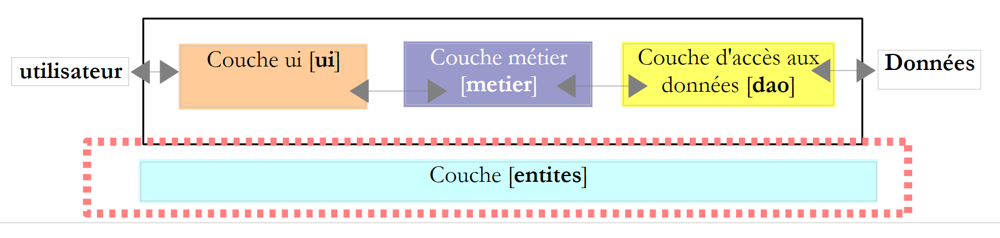 |
我们将跨层的类称为 entités。通常，封装 [dao] 层数据的类和结构都属于这一类。这些实体通常向上延伸至 [ui] 层。
应用程序的实体如下：
结构 TrancheImpot
namespace Entites {
// 一个税率档次
public struct TrancheImpot {
public decimal Limite { get; set; }
public decimal CoeffR { get; set; }
public decimal CoeffN { get; set; }
}
}
L' 异常 FileImpotException
using System;
namespace Entites {
public class FileImpotException : Exception {
// 错误代码
[Flags]
public enum CodeErreurs { Acces = 1, Ligne = 2, Champ1 = 4, Champ2 = 8, Champ3 = 16 };
// 错误代码
public CodeErreurs Code { get; set; }
// 制造商
public FileImpotException() {
}
public FileImpotException(string message)
: base(message) {
}
public FileImpotException(string message, Exception e)
: base(message, e) {
}
}
}
注：只有当 [dao] 层由 FileImpot 类实现时，FileImpotException 类才有用。
6.3.3. [dao] 层
 |
回顾 [dao] 层的接口：
using Entites;
namespace Dao {
public interface IImpotDao {
// 税率区间
TrancheImpot[] TranchesImpot{get;}
}
}
我们将通过两种不同的方式实现该接口。
首先使用第 4.10 节中讨论的 HardwiredImpot 类：
using System;
using Entites;
namespace Dao {
public class HardwiredImpot : IImpotDao {
// 计算税款所需的数据表
decimal[] limites = { 4962M, 8382M, 14753M, 23888M, 38868M, 47932M, 0M };
decimal[] coeffR = { 0M, 0.068M, 0.191M, 0.283M, 0.374M, 0.426M, 0.481M };
decimal[] coeffN = { 0M, 291.09M, 1322.92M, 2668.39M, 4846.98M, 6883.66M, 9505.54M };
// 税率区间
public TrancheImpot[] TranchesImpot { get; private set; }
// 生成器
public HardwiredImpot() {
// 创建税率区间表
TranchesImpot = new TrancheImpot[limites.Length];
// 数据填充
for (int i = 0; i < TranchesImpot.Length; i++) {
TranchesImpot[i] = new TrancheImpot { Limite = limites[i], CoeffR = coeffR[i], CoeffN = coeffN[i] };
}
}
}// 类
}// 命名空间
- 第 5 行：类 HardwiredImpot 实现了接口 IImpotDao
- 第 12 行：实现了接口 IImpotDao 的属性 TranchesImpot。 该属性为自动属性。它实现了接口 IImpotDao 中属性 TranchesImpot 的方法 get。 此外，我们还声明了一个私有方法 set（即该类内部方法），以便第 15-22 行中的构造函数能够初始化税率区间数组。
接口 IImpotDao 也将由第 5.8 节中讨论的类 FileImpot 实现：
using System;
using System.Collections.Generic;
using System.IO;
using System.Text.RegularExpressions;
using Entites;
namespace Dao {
class FileImpot : IImpotDao {
// 数据文件
public string FileName { get; set; }
// 税率区间
public TrancheImpot[] TranchesImpot { get; private set; }
// 构造函数
public FileImpot(string fileName) {
// 保存文件名
FileName = fileName;
// 数据
List<TrancheImpot> listTranchesImpot = new List<TrancheImpot>();
int numLigne = 1;
// 异常
FileImpotException fe = null;
// 逐行读取文件 fileName 的内容
Regex pattern = new Regex(@"s*:\s*");
// 起初没有错误
FileImpotException.CodeErreurs code = 0;
try {
using (StreamReader input = new StreamReader(FileName)) {
while (!input.EndOfStream && code == 0) {
// 当前行
string ligne = input.ReadLine().Trim();
// 忽略空行
if (ligne == "")
continue;
// 行被拆分为三个字段，由以下符号分隔：
string[] champsLigne = pattern.Split(ligne);
// 是否有 3 个字段？
if (champsLigne.Length != 3) {
code = FileImpotException.CodeErreurs.Ligne;
}
// 3个字段的转换
decimal limite = 0, coeffR = 0, coeffN = 0;
if (code == 0) {
if (!Decimal.TryParse(champsLigne[0], out limite))
code = FileImpotException.CodeErreurs.Champ1;
if (!Decimal.TryParse(champsLigne[1], out coeffR))
code |= FileImpotException.CodeErreurs.Champ2;
if (!Decimal.TryParse(champsLigne[2], out coeffN))
code |= FileImpotException.CodeErreurs.Champ3;
;
}
// 错误？
if (code != 0) {
// 记录错误
fe = new FileImpotException(String.Format("Ligne n° {0} incorrecte", numLigne)) { Code = code };
} else {
// 记录新的税率区间
listTranchesImpot.Add(new TrancheImpot() { Limite = limite, CoeffR = coeffR, CoeffN = coeffN });
// 下一行
numLigne++;
}
}
}
} catch (Exception e) {
// 记录错误
fe = new FileImpotException(String.Format("Erreur lors de la lecture du fichier {0}", FileName), e) { Code = FileImpotException.CodeErreurs.Acces };
}
// 是否需要报告错误？
if (fe != null) {
// 触发异常
throw fe;
} else {
// 将列表 listImpot 放入数组 tranchesImpot
TranchesImpot = listTranchesImpot.ToArray();
}
}
}
}
- 该代码已在第5.8节中进行过探讨。
- 第 14 行：接口 IImpotDao 的方法 TranchesImpot
- 第76行：在类构造函数中初始化税率区间，依据构造函数在第17行接收到的文件名称。
6.3.4. [metier]层
 |
回顾一下该层的接口：
namespace Metier {
public interface IImpotMetier {
int CalculerImpot(bool marié, int nbEnfants, int salaire);
}
}
该接口的实现 ImpotMetier 如下：
using Entites;
using Dao;
namespace Metier {
public class ImpotMetier : IImpotMetier {
// 层 [dao]
private IImpotDao Dao { get; set; }
// 税率区间
private TrancheImpot[] tranchesImpot;
// 开发商
public ImpotMetier(IImpotDao dao) {
// 存储
Dao = dao;
// 税率区间
tranchesImpot = dao.TranchesImpot;
}
// 税额计算
public int CalculerImpot(bool marié, int nbEnfants, int salaire) {
// 份额数量计算
decimal nbParts;
if (marié)
nbParts = (decimal)nbEnfants / 2 + 2;
else
nbParts = (decimal)nbEnfants / 2 + 1;
if (nbEnfants >= 3)
nbParts += 0.5M;
// 应税收入与家庭商计算
decimal revenu = 0.72M * salaire;
decimal QF = revenu / nbParts;
// 税额计算
tranchesImpot[tranchesImpot.Length - 1].Limite = QF + 1;
int i = 0;
while (QF > tranchesImpot[i].Limite)
i++;
// 返回结果
return (int)(revenu * tranchesImpot[i].CoeffR - nbParts * tranchesImpot[i].CoeffN);
}//计算
}//分类
}
- 第 5 行：类 [Metier] 实现了接口 [IImpotMetier]。
- 第 14-19 行：[metier] 层必须与 [dao] 层协作。因此，它必须持有对实现 IImpotDao 接口的对象的引用。 这就是为什么该引用被作为参数传递给构造函数。
- 第 16 行：对 [dao] 层的引用存储在第 8 行的私有字段中
- 第18行：基于该引用，构造函数请求税率区间表，并将该表的引用存储在第8行的私有属性中。
- 第22-41行：实现接口IImpotMetier中的方法CalculerImpot。该实现使用了由构造函数初始化的税率区间表。
6.3.5. [ui] 层
 |
第 2 版和第 3 版的用户对话类非常相似。第 2 版的类如下：
using System;
namespace Chap2 {
public class Program {
static void Main() {
...
// 创建对象IImpot
IImpot impot = new HardwiredImpot();
// 无限循环
while (true) {
...
}//while
}
}
}
而第 3 版的类如下：
using System;
namespace Chap3 {
public class Program {
static void Main() {
...
// 创建对象 IImpot
IImpot impot = null;
try {
// 创建对象 IImpot
impot = new FileImpot("DataImpotInvalide.txt");
} catch (FileImpotException e) {
// 显示错误
string msg = e.InnerException == null ? null : String.Format(", Exception d'origine : {0}", e.InnerException.Message);
Console.WriteLine("L'erreur suivante s'est produite : [Code={0},Message={1}{2}]", e.Code, e.Message, msg == null ? "" : msg);
// 程序停止
Environment.Exit(1);
}
// 无限循环
while (true) {
...
}//while
}
}
}
唯一的变化在于实例化用于计算税款的 IImpot 类型对象的方式。此处该对象对应于我们的 [métier] 层。
对于使用类 HardwiredImpot 实现的 [dao]，对话框类如下：
using System;
using Metier;
using Dao;
using Entites;
namespace Ui {
public class Dialogue2 {
static void Main() {
...
// 创建图层 [metier et dao]
IImpotMetier metier = new ImpotMetier(new HardwiredImpot());
// 无限循环
while (true) {
...
// 参数正确 - 计算税款
Console.WriteLine("Impot=" + metier.CalculerImpot(marié == "o", nbEnfants, salaire) + " euros");
// 下一位纳税人
}//while
}
}
}
- 第 12 行：实例化 [dao] 和 [metier] 层。需注意，[metier] 层需要 [dao] 层。
- 第 18 行：使用 [metier] 层计算税款
对于使用类 FileImpot 实现的 [dao]，对话类如下：
using System;
using Metier;
using Dao;
using Entites;
namespace Ui {
public class Dialogue {
static void Main() {
...
// 创建图层[metier et dao]
IImpotMetier metier = null;
try {
// 创建图层 [metier]
metier = new ImpotMetier(new FileImpot("DataImpot.txt"));
} catch (FileImpotException e) {
// 显示错误
string msg = e.InnerException == null ? null : String.Format(", Exception d'origine : {0}", e.InnerException.Message);
Console.WriteLine("L'erreur suivante s'est produite : [Code={0},Message={1}{2}]", e.Code, e.Message, msg == null ? "" : msg);
// 程序停止
Environment.Exit(1);
}
// 无限循环
while (true) {
...
// 参数正确 - 正在计算税款
Console.WriteLine("Impot=" + metier.CalculerImpot(marié == "o", nbEnfants, salaire) + " euros");
// 下一位纳税人
}//while
}
}
}
- 第 11-21 行：实例化 [dao] 和 [metier] 层。由于 [dao] 层的实例化可能引发异常，因此对此进行了异常处理
- 第 26 行：使用 [metier] 层计算税款，与上一版本相同
6.3.6. 结论
分层架构和接口的使用为我们的应用程序带来了一定的灵活性。这一点尤其体现在 [ui] 层实例化 [dao] 和 [métier] 层的方式上：
// 创建图层 [metier et dao]
IImpotMetier metier = new ImpotMetier(new HardwiredImpot());
在一种情况下，以及：
// 创建图层 [metier et dao]
IImpotMetier metier = null;
try {
// 创建图层 [metier]
metier = new ImpotMetier(new FileImpot("DataImpot.txt"));
} catch (FileImpotException e) {
// 显示错误
string msg = e.InnerException == null ? null : String.Format(", Exception d'origine : {0}", e.InnerException.Message);
Console.WriteLine("L'erreur suivante s'est produite : [Code={0},Message={1}{2}]", e.Code, e.Message, msg == null ? "" : msg);
// 程序停止
Environment.Exit(1);
}
。除情况 2 中的异常处理外，两个应用程序中 [dao] 和 [metier] 层的实例化方式是相似的。 一旦 [dao] 和 [metier] 层被实例化，[ui] 层的代码在两种情况下是相同的。 这是因为 [métier] 层是通过其接口 IImpotMetier 进行操作的，而不是通过该接口的实现类。 在不更改应用程序中 [metier] 或 [dao] 层接口的情况下，修改这些层，最终仍只需修改 [ui] 层中上述几行代码即可。
该架构带来的灵活性还体现在 [métier] 层的实现上：
using Entites;
using Dao;
namespace Metier {
public class ImpotMetier : IImpotMetier {
// 图层 [dao]
private IImpotDao Dao { get; set; }
// 税率区间
private TrancheImpot[] tranchesImpot;
// 建筑商
public ImpotMetier(IImpotDao dao) {
// 存储
Dao = dao;
// 税率区间
tranchesImpot = dao.TranchesImpot;
}
// 税额计算
public int CalculerImpot(bool marié, int nbEnfants, int salaire) {
...
}//计算
}//分类
}
第14行可见，[métier]层是通过引用[dao]层的接口构建的。 因此，修改后者的实现对 [métier] 层没有任何影响。正因如此，我们唯一的 [métier] 层实现才能在无需修改的情况下，与两个不同的 [dao] 层实现协同工作。
6.4. 示例应用—— 第5版
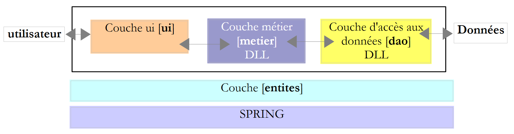 |
此新版本基于前一版本，并进行了以下修改：
- [métier] 和 [dao] 这两个层均被封装在 DLL 中，并通过单元测试框架 NUnit 进行了测试。
- 各层的集成由 Spring 框架负责
在大型项目中，通常有多名开发人员共同参与同一项目。分层架构有助于这种协作模式：由于各层之间通过明确定义的接口进行通信，因此负责某一层开发的开发人员无需关注其他层开发人员的工作。只要所有人都遵守接口规范即可。
如上所述，在测试 [métier] 层时，该层的开发人员将需要 [dao] 层的实现。 只要该层尚未完成，他就可以使用 [dao] 层的模拟实现，只要该实现符合 IImpotDao 接口即可。 这也是分层架构的一大优势：[dao]层的延迟不会阻碍[métier]层的测试。 [dao] 层的模拟实现还具有另一个优势：通常比真正的 [dao] 层更容易实现，后者可能需要启动 SGBD、建立网络连接等。
当 [dao] 层开发完成并经过测试后，将以 DLL 的形式（而非源代码）提供给 [métier] 层的开发人员。 最终，应用程序通常以 .exe 可执行文件（来自 [ui] 层）和 .dll 类库（其他层）的形式交付。
6.4.1. NUnit
迄今为止，我们对各类应用程序进行的测试主要依赖于目视检查。 我们仅确认屏幕显示结果是否符合预期。当需要执行大量测试时，这种方法便难以奏效。毕竟人会感到疲劳，且随着一天的推移，其执行测试的能力也会逐渐减弱。因此，测试必须实现自动化，并力求无需任何人工干预。
应用程序会随着时间的推移而不断演进。每次更新后，都必须验证应用程序是否出现“退化”，c.a.d，即它是否仍能通过最初编写时所进行的正常运行测试。这些测试被称为“回归测试”。对于规模稍大的应用程序，可能需要进行数百次测试。 实际上，我们会测试应用程序中每个类的每个方法。这被称为单元测试。如果这些测试未实现自动化，可能会占用大量开发人员的时间。
为此开发了多种测试自动化工具，其中一款名为 NUnit。该工具可在 [http://www.nunit.org] 网站上获取：
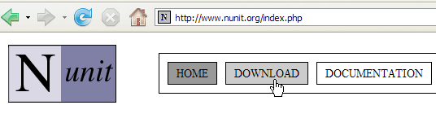 | 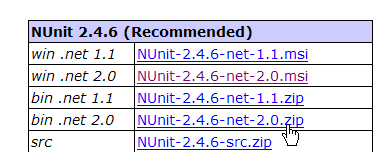 |
本文档（2008年3月）使用的是上述2.4.6版本。安装后，桌面会生成一个名为[1]的图标：
 |
双击图标 [1] 将启动 NUnit [2] 的图形界面。 但这对测试自动化毫无帮助，因为我们又回到了目视检查：测试人员需要核对图形界面中显示的测试结果。 不过，测试也可以通过批处理工具执行，并将结果保存到 XML 文件中。开发团队采用的就是这种方法：测试在夜间运行，开发人员次日早晨即可获得结果。
让我们通过一个示例来探讨 NUnit 测试的原理。首先，创建一个新的 C# 控制台应用程序项目：
 |
在[1]中，可以看到该项目的références。这些引用是包含项目所用类和接口的DLL。 [1]中列出的内容默认包含在每个新的C#项目中。为了能够使用NUnit框架的类和接口，我们需要向项目中添加一个新的引用。
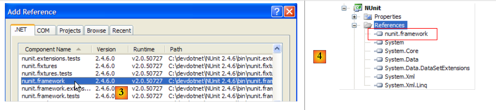 |
在上述 .NET 选项卡中，我们选择 [nunit.framework] 组件。上述 [nunit.*] 组件并非 .NET 环境中的默认组件。 它们是通过之前安装的 NUnit 框架引入的。一旦引用添加成功，它就会以 [4] 的形式出现在项目的引用列表中。
在生成应用程序之前，项目的 [bin/Release] 文件夹是空的。生成后（F6），可以看到 [bin/Release] 文件夹不再是空的：
 |
在 [6] 中，可以看到 DLL 和 [nunit.framework.dll] 的存在。 正是添加了 [nunit.framework] 引用，才导致该 DLL 被复制到运行文件夹中。 该文件夹正是 CLR（通用语言运行时）和 NET 将要扫描的文件夹之一，以查找项目引用的类和接口。
让我们构建第一个测试类 NUnit。为此，我们先删除默认生成的类 [Program.cs]，然后向项目中添加一个新类 [Nunit1.cs]。 同时，我们还删除了多余的引用 [7]。
测试类 NUnit1 将如下所示：
using System;
using NUnit.Framework;
namespace NUnit {
[TestFixture]
public class NUnit1 {
public NUnit1() {
Console.WriteLine("constructeur");
}
[SetUp]
public void avant() {
Console.WriteLine("Setup");
}
[TearDown]
public void après() {
Console.WriteLine("TearDown");
}
[Test]
public void t1() {
Console.WriteLine("test1");
Assert.AreEqual(1, 1);
}
[Test]
public void t2() {
Console.WriteLine("test2");
Assert.AreEqual(1, 2, "1 n'est pas égal à 2");
}
}
}
- 第 6 行：类 NUnit1 必须是 public 的。Visual Studio 默认不会生成 public 关键字，需要手动添加。
- 第 5 行：[TestFixture] 属性是 NUnit 属性。它表明该类是一个测试类。
- 第 7-9 行：构造函数。此处仅用于在屏幕上输出消息。我们需要观察其何时被调用。
- 第 10 行：[SetUp] 属性定义了一个在每次单元测试之前执行的方法。
- 第 14 行：属性 [TearDown] 定义了一个在每次单元测试后执行的方法。
- 第 18 行：属性 [Test] 定义了一个测试方法。 对于每个标注了 [Test] 属性的方法，标注了 [SetUp] 的方法将在测试前执行，而标注了 [TearDown] 的方法将在测试后执行。
- 第 21 行：由框架 NUnit 定义的 [Assert.*] 方法之一。其中包括以下 [Assert] 方法：
- [Assert.AreEqual(expression1, expression2)]：验证两个表达式的值是否相等。支持多种表达式类型（int、string、float、double、decimal 等）。若两个表达式不相等，则抛出异常。
- [Assert.AreEqual(réel1, réel2, delta)]：验证两个实数是否在误差 delta 范围内相等，即 c.a.d abs(实数1 - 实数2) <= delta。例如，可以使用 [Assert.AreEqual(réel1, réel2, 1E-6)] 来验证两个值是否在误差 10⁻⁶ 范围内相等。
- [Assert.AreEqual(expression1, expression2, message)] 和 [Assert.AreEqual(réel1, réel2, delta, message)] 是用于指定当方法 [Assert.AreEqual] 失败时，与抛出的异常关联的错误消息的变体。
- [Assert.IsNotNull(object)] 和 [Assert.IsNotNull(object, message)]：验证 object 不为 null。
- [Assert.IsNull(object)] 和 [Assert.IsNull(object, message)]：检查 object 是否为 null。
- [Assert.IsTrue(expression)] 和 [Assert.IsTrue(expression, message)]：验证表达式是否等于 true。
- [Assert.IsFalse(expression)] 和 [Assert.IsFalse(expression, message)]：验证表达式是否等于 false。
- [Assert.AreSame(object1, object2)] 和 [Assert.AreSame(object1, object2, message)]：验证引用 object1 和 object2 是否指向同一个对象。
- [Assert.AreNotSame(object1, object2)] 和 [Assert.AreNotSame(object1, object2, message)]：验证引用 object1 和 object2 是否不指向同一个对象。
- 第 21 行：断言应通过
- 第 26 行：断言应失败
让我们配置该项目，使其生成 DLL 文件而非 .exe 可执行文件：
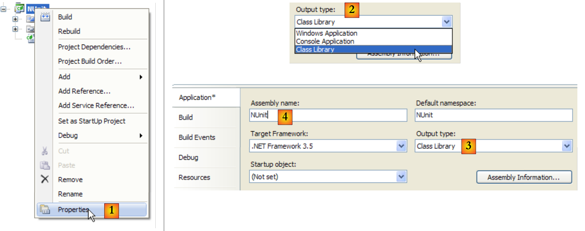 |
- 在 [1] 中：项目属性
- 在 [2, 3] 中：项目类型选择 [Class Library]（类库）
- 在 [4] 中：项目生成将产生一个名为 DLL（程序集）的文件，其名称为 [Nunit.dll]
现在，我们使用 NUnit 来运行测试类：
 |
- 在 [1] 中：打开项目 NUnit
- 在 [2, 3] 中：加载由 C# 项目生成生成的 DLL bin/Release/Nunit.dll
- 在 [4] 中：已加载 DLL
- 在 [5] 中：测试树
- 在 [6] 中：正在执行
 |
- 在 [7]：结果：t1 通过，t2 失败
- 在 [8] 中：红色条形图表示测试类整体失败
- 在 [9] 中：与失败测试相关的错误信息
 |
- 在 [11] 中：结果窗口的各个选项卡
- 在 [12] 中：[Console.Out] 选项卡。其中显示：
- 构造函数仅被执行了一次
- 方法 [SetUp] 在两次测试之前均被执行
- 方法 [TearDown] 在两次测试之后各执行了一次
可以指定要测试的方法：
 |
- 在 [1] 中：要求在每个测试旁边显示一个复选框
- 在 [2] 中：勾选要执行的测试
- 在 [3] 中：执行这些测试
要修正错误，只需修改 C# 项目并重新生成即可。NUnit 会检测到其正在测试的 DLL 已发生变更，并自动加载新版本。随后只需重新运行测试即可。
让我们来看以下这个新的测试类：
using System;
using NUnit.Framework;
namespace NUnit {
[TestFixture]
public class NUnit2 : AssertionHelper {
public NUnit2() {
Console.WriteLine("constructeur");
}
[SetUp]
public void avant() {
Console.WriteLine("Setup");
}
[TearDown]
public void après() {
Console.WriteLine("TearDown");
}
[Test]
public void t1() {
Console.WriteLine("test1");
Expect(1, EqualTo(1));
}
[Test]
public void t2() {
Console.WriteLine("test2");
Expect(1, EqualTo(2), "1 n'est pas égal à 2");
}
}
}
从 NUnit 的 2.4 版本开始，新增了第 21 行和第 26 行所示的新语法。为此，测试类必须继承自 AssertionHelper 类（第 6 行）。
新旧语法之间的对应关系（非穷尽）如下：
在类 NUnit2 中添加以下测试：
[Test]
public void t3() {
bool vrai = true, faux = false;
Expect(vrai, True);
Expect(faux, False);
Object obj1 = new Object(), obj2 = null, obj3=obj1;
Expect(obj1, Not.Null);
Expect(obj2, Null);
Expect(obj3, SameAs(obj1));
double d1 = 4.1, d2 = 6.4, d3 = d1;
Expect(d1, EqualTo(d3).Within(1e-6));
Expect(d1, Not.EqualTo(d2));
}
如果生成（F6）C# 项目中的新 DLL，则 NUnit 项目将变为如下所示：
 |
- 在 [1] 中：新测试类 [NUnit2] 已被自动检测
- 在 [2] 中：正在执行 NUnit2 的 t3 测试
- 在 [3] 中：测试 t3 已通过
如需进一步了解 NUnit，请参阅 NUnit 的帮助文档：
 | 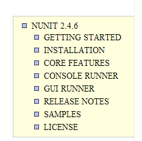 |
6.4.2. Visual Studio 解决方案
 |
我们将逐步构建以下 Visual Studio 解决方案：
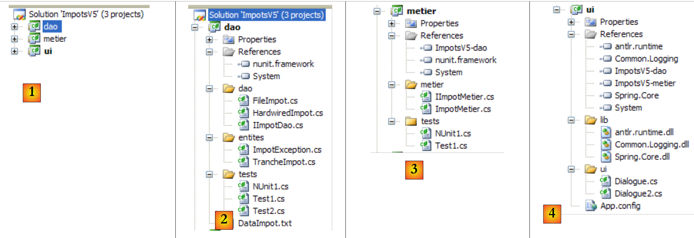 |
- 在 [1] 中：ImpotsV5 解决方案由三个项目组成，每个项目对应应用程序的三个层之一
- 在 [2] 中：[dao] 层的 [dao] 项目
- 在 [3] 中：[metier] 层的项目 [metier]
- 生成 [4]：来自 [ui] 层的项目 [ui]
ImpotsV5 解决方案可按以下方式构建：
1 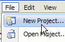 | 234  | 5  |
- 在 [1] 中：创建一个新项目
- 在 [2] 中：选择一个控制台应用程序
- 在 [3] 中：调用项目 [dao]
- 在 [4] 中：创建项目
- 在 [5] 中：项目创建完成后，将其保存
 |
- 在 [6] 中：保留项目名称 [dao]
- 在 [7] 中：指定一个文件夹来保存项目及其解决方案
- 在 [8] 中：为解决方案命名
- 在 [9] 中：指定解决方案应拥有独立文件夹
- 在 [10] 中：保存项目及其解决方案
- 在 [11] 中：项目 [dao] 位于其解决方案 ImpotsV5 中
 |
- 在 [12] 中：解决方案 ImpotsV5 的文件夹。它包含文件夹 [dao] 中的文件夹 [dao]。
- 在 [13] 中：[dao] 文件夹的内容
- 在 [14] 中：向解决方案 ImpotsV5 中添加一个新项目
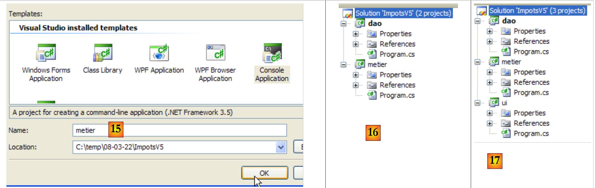 |
- 在 [15] 中：新项目名为 [metier]
- 在 [16] 中：包含两个项目的解决方案
- 在 [17] 中：添加了第三个项目 [ui] 后的解决方案
 |
- 在 [18] 中：解决方案文件夹及三个项目的文件夹
- 当通过 (Ctrl+F5) 运行解决方案时，将执行当前活动项目。生成 (F6) 解决方案时也是如此。 在解决方案中，活动项目的名称以粗体显示为 [19]。
- 在 [20] 中：若要将解决方案的当前项目
- 在 [21] 中：项目 [metier] 现已成为解决方案中的活动项目
6.4.3. [dao] 层
 |
 |
项目引用（参见项目中的 [1]）
添加测试所需的引用 [nunit.framework][NUnit]
实体（参见项目中的 [2]）
类 [TrancheImpot] 属于旧版本。将旧版本的类 [FileImpotException] 重命名为 [ImpotException]，以使其更具通用性，并避免将其与特定的 [dao] 层相关联：
using System;
namespace Entites {
public class ImpotException : Exception {
// 错误代码
public int Code { get; set; }
// 制造商
public ImpotException() {
}
public ImpotException(string message)
: base(message) {
}
public ImpotException(string message, Exception e)
: base(message, e) {
}
}
}
[dao] 层（参见项目中的 [3]）
接口 [IImpotDao] 与上一版本相同。类 [HardwiredImpot] 亦是如此。 类 [FileImpot] 已更新，以适应异常 [FileImpotException] 更改为 [ImpotException] 的情况：
...
namespace Dao {
public class FileImpot : IImpotDao {
// 错误代码
[Flags]
public enum CodeErreurs { Acces = 1, Ligne = 2, Champ1 = 4, Champ2 = 8, Champ3 = 16 };
...
// 构造函数
public FileImpot(string fileName) {
// 保存文件名
FileName = fileName;
...
// 起初没有错误
CodeErreurs code = 0;
try {
using (StreamReader input = new StreamReader(FileName)) {
while (!input.EndOfStream && code == 0) {
...
// 错误？
if (code != 0) {
// 记录错误
fe = new ImpotException(String.Format("Ligne n° {0} incorrecte", numLigne)) { Code = (int)code };
} else {
...
}
}
}
} catch (Exception e) {
// 记录错误
fe = new ImpotException(String.Format("Erreur lors de la lecture du fichier {0}", FileName), e) { Code = (int)CodeErreurs.Acces };
}
// 需要报告错误？
...
}
}
}
- 第 8 行：原先位于类 [FileImpotException] 中的错误代码已迁移至类 [FileImpot]。这些实际上是 [IImpotDao] 接口此实现特有的错误代码。
- 第26行和第34行：封装错误时，现在使用的是[ImpotException]类，而非[FileImpotException]类。
测试类 [Test1]（参见项目中的 [4]）
类 [Test1] 仅负责在屏幕上显示税率区间：
using System;
using Dao;
using Entites;
namespace Tests {
class Test1 {
static void Main() {
// 创建图层 [dao]
IImpotDao dao = null;
try {
// 创建图层 [dao]
dao = new FileImpot("DataImpot.txt");
} catch (ImpotException e) {
// 显示错误
string msg = e.InnerException == null ? null : String.Format(", Exception d'origine : {0}", e.InnerException.Message);
Console.WriteLine("L'erreur suivante s'est produite : [Code={0},Message={1}{2}]", e.Code, e.Message, msg == null ? "" : msg);
// 程序停止
Environment.Exit(1);
}
// 显示税率区间
TrancheImpot[] tranchesImpot = dao.TranchesImpot;
foreach (TrancheImpot t in tranchesImpot) {
Console.WriteLine("{0}:{1}:{2}", t.Limite, t.CoeffR, t.CoeffN);
}
}
}
}
- 第 13 行：[dao] 层由类 [FileImpot] 实现
- 第 14 行：处理可能发生的 [ImpotException] 类型的异常。
测试所需的文件 [DataImpot.txt] 会自动复制到项目的运行文件夹中（参见项目中的 [5]）。 项目 [dao] 将包含多个包含方法 [Main] 的类。因此，当用户通过 Ctrl-F5 请求执行项目时，必须显式指定要执行的类：
 |
- 在 [1] 中：访问项目属性
- 在 [2] 中：指定为控制台应用程序
- 在 [3] 中：指定要执行的类
执行上述类 [Test1] 后，结果如下：
4962:0:0
8382:0,068:291,09
14753:0,191:1322,92
23888:0,283:2668,39
38868:0,374:4846,98
47932:0,426:6883,66
0:0,481:9505,54
测试 [Test2]（参见项目中的 [4]）
类 [Test2] 与类 [Test1] 功能相同，通过使用类 [HardwiredImpot] 来实现 [dao] 层。 [Test1] 的第 13 行被替换为以下内容：
dao = new HardwiredImpot();
项目已修改，现执行类 [Test2]：
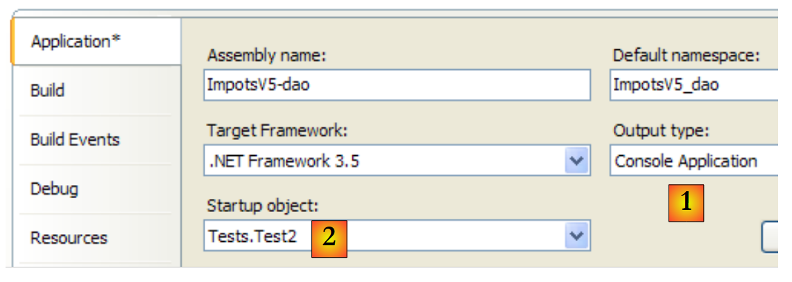 |
屏幕输出结果与之前相同。
测试 NUnit [NUnit1]（参见项目中的 [4]）
单元测试 [NUnit1] 如下：
using System;
using Dao;
using Entites;
using NUnit.Framework;
namespace Tests {
[TestFixture]
public class NUnit1 : AssertionHelper{
// 待测试的图层 [dao]
private IImpotDao dao;
// 生成器
public NUnit1() {
// 初始化层 [dao]
dao = new FileImpot("DataImpot.txt");
}
// 测试
[Test]
public void ShowTranchesImpot(){
// 显示税率区间
TrancheImpot[] tranchesImpot = dao.TranchesImpot;
foreach (TrancheImpot t in tranchesImpot) {
Console.WriteLine("{0}:{1}:{2}", t.Limite, t.CoeffR, t.CoeffN);
}
// 一些测试
Expect(tranchesImpot.Length,EqualTo(7));
Expect(tranchesImpot[2].Limite,EqualTo(14753));
Expect(tranchesImpot[2].CoeffR, EqualTo(0.191));
Expect(tranchesImpot[2].CoeffN, EqualTo(1322.92));
}
}
}
- 该测试类继承自类 [AssertionHelper]，从而能够调用静态方法 Expect（第 27-30 行）。
- 第 10 行：对 [dao] 层的引用
- 第13-16行：构造函数使用类[FileImpot]实例化层[dao]
- 第 19-20 行：测试方法
- 第22行：从[dao]层获取税率区间数组
- 第23-25行：按之前的方式显示这些数据。在真正的单元测试中，这种显示本不该出现。此处，此显示仅出于教学目的。
- 第27行：验证是否确实有7个税率区间
- 第28-30行：验证第2个税级的数值
要执行此单元测试，项目类型必须为 [Class Library]：
 |
- 在 [1] 中：项目类型已更改
- 变为 [2]：生成的 DLL 将命名为 [ImpotsV5-dao.dll]
- 在 [3] 中：项目生成（F6）后，[dao/bin/Release] 文件夹中包含 DLL 和 [ImpotsV5-dao.dll]
随后，DLL [ImpotsV5-dao.dll] 被加载到 NUnit 框架中并执行：
 |
- 在 [1] 中：测试已通过。我们现在认为 [dao] 层已投入运行。其 DLL 包含项目中的所有类，包括测试类。这些测试类已无用武之地。 我们将重建 DLL 以排除其中的测试类。
- 生成 [2]：将 [tests] 文件夹从项目中移除
- 生成 [3]：新项目。该项目由 F6 重新生成，以生成新的 DLL。
6.4.4. [metier] 层
 |
 |
- 在 [1] 中，项目 [metier] 已成为解决方案的
- 在 [2] 中：项目引用
- 在 [3] 中：[metier] 层
- 在 [4] 中：测试类
- 在 [5] 中：已配置的税率区间文件 [DataImpot.txt]，该文件将通过 [6] 自动复制到项目运行文件夹 [7] 中
项目引用（参见项目中的 [2]）
与项目 [dao] 类似，为测试 [NUnit] 添加了必要的引用 [nunit.framework]。 层 [metier] 需要层 [dao]。因此，它需要引用该层中的 DLL。操作步骤如下：
 |
- 在 [1] 中：向项目 [metier] 的引用中添加一个新引用
- 在 [2] 中：选择 [Browse] 选项卡
- 在 [3] 中：选择文件夹 [dao/bin/Release]
- 在 [4] 中：选择在项目 [dao] 中生成的 DLL [ImpotsV5-dao.dll]
- 在 [5] 中：新的参考编号
图层 [metier]（参见项目中的 [3]）
[IImpotMetier] 接口与上一版本相同。[ImpotMetier] 类亦是如此。
测试 [Test1]（参见项目中的 [4]）
类 [Test1] 仅执行一些薪资计算：
using System;
using Dao;
using Entites;
using Metier;
namespace Tests {
class Test1 {
static void Main() {
// 创建图层 [metier]
IImpotMetier metier = null;
try {
// 创建图层 [metier]
metier = new ImpotMetier(new FileImpot("DataImpot.txt"));
} catch (ImpotException e) {
// 显示错误
string msg = e.InnerException == null ? null : String.Format(", Exception d'origine : {0}", e.InnerException.Message);
Console.WriteLine("L'erreur suivante s'est produite : [Code={0},Message={1}{2}]", e.Code, e.Message, msg == null ? "" : msg);
// 程序停止
Environment.Exit(1);
}
// 计算若干税款
Console.WriteLine(String.Format("Impot(true,2,60000)={0} euros", metier.CalculerImpot(true, 2, 60000)));
Console.WriteLine(String.Format("Impot(false,3,60000)={0} euros", metier.CalculerImpot(false, 3, 60000)));
Console.WriteLine(String.Format("Impot(false,3,60000)={0} euros", metier.CalculerImpot(false, 3, 6000)));
Console.WriteLine(String.Format("Impot(false,3,60000)={0} euros", metier.CalculerImpot(false, 3, 600000)));
}
}
}
- 第14行：创建[metier]和[dao]层。[dao]层由[FileImpot]类实现
- 第 12-21 行：处理可能出现的 [ImpotException] 类型异常
- 第 23-26 行：重复调用接口 [IImpotMetier] 中的唯一方法 CalculerImpot。
项目 [metier] 的配置如下：
 |
- [1]：该项目为控制台应用程序类型
- [2]：执行类为 [Test1]
- [3]：项目生成将产生可执行文件 [ImpotsV5-metier.exe]
运行该项目将得到以下结果：
测试用例 [NUnit1]（参见项目中的 [4]）
单元测试类 [NUnit1] 采用了前面的四个计算，并验证了其结果：
using Dao;
using Metier;
using NUnit.Framework;
namespace Tests {
[TestFixture]
public class NUnit1:AssertionHelper {
// 待测试图层 [metier]
private IImpotMetier metier;
// 制造商
public NUnit1() {
// 初始化图层 [metier]
metier = new ImpotMetier(new FileImpot("DataImpot.txt"));
}
// 测试
[Test]
public void CalculsImpot(){
// 显示税率区间
Expect(metier.CalculerImpot(true, 2, 60000), EqualTo(4282));
Expect(metier.CalculerImpot(false, 3, 60000), EqualTo(4282));
Expect(metier.CalculerImpot(false, 3, 6000), EqualTo(0));
Expect(metier.CalculerImpot(false, 3, 600000), EqualTo(179275));
}
}
}
- 第 14 行：创建 [metier] 和 [dao] 层。[dao] 层由 [FileImpot] 类实现
- 第21-24行：反复调用接口[IImpotMetier]中的唯一方法CalculerImpot，并验证结果。
项目 [metier] 现已配置如下：
 |
- [1]：该项目类型为“类库”
- [2]：生成该项目将产生 DLL [ImpotsV5-metier.dll]
项目已生成（F6）。随后，生成的DLL、[ImpotsV5-metier.dll]和 被加载到NUnit中并进行测试：
 |
如上所示，测试已成功通过。我们现将 [metier] 层视为已投入运行。其 DLL 包含项目中的所有类，其中包括测试类。这些测试类已无用武之地。 我们将重建 DLL 以排除其中的测试类。
 |
- 生成 [1]：文件夹 [tests] 已从项目中排除
- 生成 [2]：新项目。该项目由 F6 重新生成，以生成新的 DLL。
6.4.5. 图层 [ui]
 |
 |
- 生成 [1] 时，项目 [ui] 已成为解决方案中的活动项目
- 在 [2] 中：项目引用
- 在 [3] 中：图层 [ui]
- 在 [4] 中：税级文件 [DataImpot.txt]，已配置为自动复制到项目 [6] 的运行文件夹中
项目引用（参见项目中的 [2]）
图层 [ui] 需要图层 [metier] 和 [dao] 才能完成其税额计算。因此，它需要引用这两个图层的 DLL。 操作步骤与[metier]层所示相同
主类 [Dialogue.cs]（参见项目中的 [3]）
类 [Dialogue.cs] 属于上一版本。
测试
项目 [ui] 的配置如下：
 |
- [1]：该项目为“控制台应用程序”类型
- [2]：项目生成将产生可执行文件 [ImpotsV5-ui.exe]
- [3]：将被执行的类
一个运行示例（Ctrl+F5）如下：
Paramètres du calcul de l'Impot au format : Marié (o/n) NbEnfants Salaire ou rien pour arrêter :o 2 60000
Impot=4282 euros
6.4.6. [Spring] 层
让我们回到 [Dialogue.cs] 中的代码，该代码创建了 [dao] 和 [metier] 层：
// 创建图层 [metier et dao]
IImpotMetier metier = null;
try {
// 创建图层 [metier]
metier = new ImpotMetier(new FileImpot("DataImpot.txt"));
} catch (ImpotException e) {
// 显示错误
...
// 程序停止
Environment.Exit(1);
}
第 5 行通过显式指定两个层的实现类名称，创建了 [dao] 和 [metier] 层：FileImpot 对应 [dao] 层， ImpotMetier 对应于 [metier] 层。如果某一层使用新类进行实现，则第 5 行将被修改。例如：
metier = new ImpotMetier(new HardwiredImpot());
除了这一变更外，应用程序不会发生任何变化，因为每一层都是通过接口与下一层进行通信的。只要接口保持不变，层与层之间的通信方式也不会改变。 Spring框架让我们在层独立性方面更进一步，它允许我们将实现不同层的类名外部化到一个配置文件中。因此，更改某一层级的实现就等同于修改一个配置文件。这对应用程序的代码没有任何影响。
 |
上文中，[ui] 层将请求 Spring 实例化 [0]根据配置文件中的信息，实例化 [dao]、[1] 以及 [metier]、[2] 这几层。 随后，[ui] 层将向 Spring [3] 请求 [metier] 层的引用：
// 创建图层 [metier et dao]
IImpotMetier metier = null;
try {
// Spring 上下文
IApplicationContext ctx = ContextRegistry.GetContext();
// 请求图层引用 [metier]
metier = (IImpotMetier)ctx.GetObject("metier");
} catch (Exception e1) {
...
}
- 第 5 行：Spring 实例化 [dao] 和 [metier] 层
- 第 7 行：获取 [metier] 层的引用。需要注意的是，[ui] 层曾持有该引用，但未提供实现 [metier] 层的类名。
Spring框架有两个版本：Java版和.NET版。截至2008年3月，.NET版可通过以下网址获取：[http://www.springframework.net/]：
 |
- 在 [1] 中：[Spring.net] 的网站
- 在 [2]：下载页面
 |
- 在 [3]：下载 Spring 1.1（2008年3月）
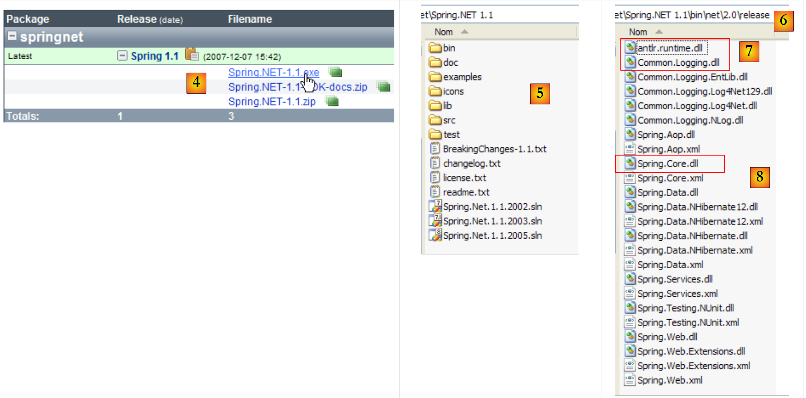 |
- 转换为 [4]：下载 .exe 版本并安装
- 在 [5] 中：安装生成的文件夹
- 在 [6] 中：文件夹 [bin/net/2.0/release] 包含适用于 Visual Studio 2.0 或更高版本项目的 Spring DLL 文件。 Spring 是一个功能丰富的框架。我们在此将使用 Spring 的某个特性来管理应用程序中各层的集成，该特性被称为 IoC：控制反转（Inversion of Control），或称 DI：依赖注入（Dependency Injection）。 Spring 提供了用于访问数据库的库（如 NHibernate），以及用于生成和运行 Web 服务、Web 应用程序等的库……
- 管理应用程序中各层集成所需的DLL包括DLL、[7]和[8]。
我们将这三个 DLL 存储在项目中的一个名为 [lib] 的文件夹中：
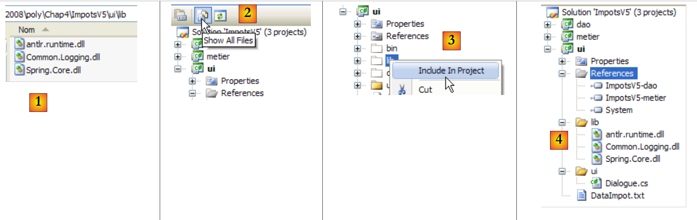 |
- [1]：使用Windows资源管理器将这三个DLL文件放置在[lib]文件夹中
- [2]：在项目 [ui] 中，显示所有文件
- [3]：文件夹 [ui/lib] 现已可见。将其纳入项目
- [4]：文件夹 [ui/lib] 已成为项目的一部分
创建文件夹 [lib] 并非绝对必要。引用可直接在 [bin/net/2.0/release] 文件夹下的三个 DLL 文件中创建，该文件夹位于 [Spring.net] 之下。 不过，创建文件夹 [lib] 使得可以在未安装 [Spring.net] 的计算机上开发应用程序，从而降低对现有开发环境的依赖。
我们在项目 [ui] 中添加了对三个新 DLL 的引用：
 |
- [1]：在文件夹 [lib] 中创建指向三个 DLL 的引用 [2]
- [3]：这三个 DLL 文件属于该项目的引用
让我们回到应用程序架构的概览：
 |
在上图中，[ui]层将请求Spring根据配置文件中的信息，实例化 [dao]、[1] 以及 [metier]、[2] 这几层。 随后，[ui] 层将向 Spring [3] 层请求 [metier] 层的引用。这在 [ui] 层中将体现为以下代码：
// 创建层 [metier et dao]
IImpotMetier metier = null;
try {
// Spring 上下文
IApplicationContext ctx = ContextRegistry.GetContext();
// 请求 [metier] 层上的引用
metier = (IImpotMetier)ctx.GetObject("metier");
} catch (Exception e1) {
...
}
- 第 5 行：Spring 实例化 [dao] 和 [metier] 层
- 第 7 行：获取 [metier] 层的引用。
上文中的 [5] 行利用了 Visual Studio 项目中的配置文件 [App.config]。 在 C# 项目中，该文件用于配置应用程序。因此，[App.config] 并非 Spring 的概念，而是 Spring 所利用的 Visual Studio 概念。Spring 还能利用除 [App.config] 以外的其他配置文件。因此，此处介绍的解决方案并非唯一可选方案。
让我们使用 Visual Studio 向导创建 [App.config] 文件：
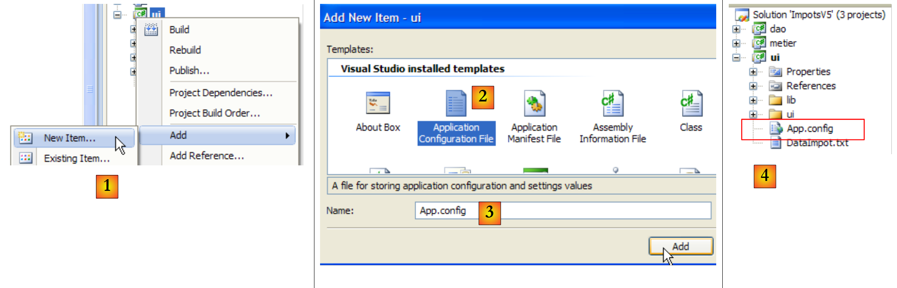 |
- 在 [1] 中：向项目添加新项
- 在 [2] 中：选择“应用程序配置文件”
- 在 [3] 中：[App.config] 是该配置文件的默认名称
- 在 [4] 中：文件 [App.config] 已添加到项目中
文件 [App.config] 的内容如下：
<?xml version="1.0" encoding="utf-8" ?>
<configuration>
</configuration>
[App.config] 是一个XML文件。项目配置位于<configuration>标签之间。Spring所需的配置如下：
<?xml version="1.0" encoding="utf-8" ?>
<configuration>
<configSections>
<sectionGroup name="spring">
<section name="context" type="Spring.Context.Support.ContextHandler, Spring.Core" />
<section name="objects" type="Spring.Context.Support.DefaultSectionHandler, Spring.Core" />
</sectionGroup>
</configSections>
<spring>
<context>
<resource uri="config://spring/objects" />
</context>
<objects xmlns="http://www.springframework.net">
<object name="dao" type="Dao.FileImpot, ImpotsV5-dao">
<constructor-arg index="0" value="DataImpot.txt"/>
</object>
<object name="metier" type="Metier.ImpotMetier, ImpotsV5-metier">
<constructor-arg index="0" ref="dao"/>
</object>
</objects>
</spring>
</configuration>
- 第 11-23 行：由 <spring> 标签界定的部分称为 <spring> 部分组。在 [App.config] 中可以创建任意数量的部分组。
- 一个章节组包含多个章节：本例即为如此：
- 第 12-14 行：<spring/context> 部分
- 第 15-22 行：<spring/objects> 部分
- 第 4-9 行：<configSections> 区域定义了 [App.config] 中现有章节组的处理程序（handlers）列表。
- 第 5-8 行：定义了 <spring> 组（name="spring"）中各节的处理程序列表。
- 第 6 行：<spring> 组中 <context> 节的处理程序：
- name：所管理节点的名称
- type：管理该节的类名，格式为 NomClasse、NomDLL。
- <spring> 组的 <context> 部分由类 [Spring.Context.Support.ContextHandler] 管理，该类可在 DLL 和 [Spring.Core.dll] 中找到
- 第 7 行：<spring> 组中 <objects> 部分的管理器
第 4-9 行是 [App.config] 文件中使用 Spring 时的标准内容。我们只需将其从一个项目复制到另一个项目即可。
- 第12-14行：定义<spring/context>部分。
- 第13行：<resource>标签用于指定Spring需实例化类所对应的配置文件位置。这些类可以像此处一样位于[App.config]中，但也可能位于其他配置文件中。这些类的路径通过<resource>标签的uri属性指定：
- <resource uri="config://spring/objects"> 表示待实例化的类列表位于文件 [App.config]（config:）的 //spring/objects 部分，即 <spring> 标签内的 <objects> 标签中。
- <resource uri="file://spring-config.xml"> 表示待实例化的类列表位于文件 [spring-config.xml] 中。该文件应放置在项目的运行文件夹（bin/Release 或 bin/Debug）中。 最简单的方法是将其与 [DataImpot.txt] 文件一样，放置在项目根目录下，并使用 [Copy to output directory=always] 属性。
第 12-14 行是 [App.config] 文件中使用 Spring 时的标准内容。只需将它们从一个项目复制到另一个项目即可。
- 第15-22行：定义待实例化的类。此部分用于进行应用程序的特定配置。<objects>标签界定了待实例化类定义的范围。
- 第 16-18 行：定义 [dao] 层的实例化类
- 第16行：Spring实例化的每个对象都由一个<object>标签表示。该标签有一个name属性，即实例化对象的名称。应用程序正是通过该属性向Spring请求引用：“给我一个名为dao的对象的引用”。 type 属性以 NomClasse、NomDLL 的形式定义待实例化的类。 因此，第 16 行定义了一个名为“dao”的对象，它是位于 DLL 中的“Dao.FileImpot”类的实例。 需要注意的是，这里给出了类的完整名称（包括命名空间），且 DLL 的名称中未明确指定 .dll 后缀。
在 Spring 中，可以通过两种方式实例化类：
- 通过向特定构造函数传递参数：第 16-18 行即采用了此方法。
- 通过不带参数的默认构造函数。此时对象将通过其公共属性进行初始化：<object> 标签下会包含 <property> 子标签来初始化这些属性。此处未提供此类示例。
- （续）
- 第 16 行：实例化的类是 FileImpot 类。该类具有以下构造函数：
public FileImpot(string fileName);
构造函数的参数通过 <constructor-arg> 标签进行定义。
- 第 17 行：定义构造函数的第一个也是唯一的参数。index 属性表示构造函数参数的编号，value 属性表示其值：<constructor-arg index="i" value="valuei"/>
- 第19-21行：定义了用于[metier]层的实例化类：位于DLL [ImpotsV5-metier.dll]中的[Metier.ImpotMetier]类。
- 第 19 行：实例化的类是 ImpotMetier。该类具有以下构造函数：
public ImpotMetier(IImpotDao dao);
- （续）
- 第 20 行：定义构造函数的第一个也是唯一的参数。上文中，构造函数的参数 dao 是一个对象引用。 在此情况下，在 <constructor-arg> 标签中使用 ref 属性，而非用于 [dao] 层面的 value 属性：<constructor-arg index="i" ref="refi"/>。 在上述构造函数中，参数 dao 代表 [dao] 层上的一个实例。该实例由配置文件的第 16-18 行定义。因此，在第 20 行中：
<constructor-arg index="0" ref="dao"/>
ref="dao" 代表由第 16-18 行定义的 Spring 对象 "dao"。
简而言之，文件 [App.config]：
- 通过 FileImpot 类实例化 [dao] 层，该类接收 DataImpot.txt 作为参数（第 16-18 行）。生成的对象名为“dao”
- 通过类 ImpotMetier 实例化 [metier] 层，该类接收前一个“dao”对象作为参数（第 19-21 行）。
接下来，我们只需在 [ui] 层中使用该 Spring 配置文件即可。 为此，我们将类 [Dialogue.cs] 复制为 [Dialogue2.cs]，并将后者设为项目 [ui] 的主类：
 |
- 为 [1]：复制自 [Dialogue.cs]
- 为 [2]：合并
- 为 [3]：[Dialogue.cs] 的副本
- 在 [4] 中：重命名为 [Dialogue2.cs]
 |
- 转换为 [6]：将 [Dialogue2.cs] 设为项目 [ui] 的主类。
以下是 [Dialogue.cs] 的代码：
// 创建图层 [metier et dao]
IImpotMetier metier = null;
try {
// 创建图层 [metier]
metier = new ImpotMetier(new FileImpot("DataImpot.txt"));
} catch (ImpotException e) {
// 显示错误
string msg = e.InnerException == null ? null : String.Format(", Exception d'origine : {0}", e.InnerException.Message);
Console.WriteLine("L'erreur suivante s'est produite : [Code={0},Message={1}{2}]", e.Code, e.Message, msg == null ? "" : msg);
// 程序停止
Environment.Exit(1);
}
// 无限循环
while (true) {
...
在 [Dialogue2.cs] 中变为：
// 创建图层 [metier et dao]
IApplicationContext ctx = null;
try {
// Spring 上下文
ctx = ContextRegistry.GetContext();
} catch (Exception e1) {
// 显示错误
Console.WriteLine("Chaîne des exceptions : \n{0}", "".PadLeft(40, '-'));
Exception e = e1;
while (e != null) {
Console.WriteLine("{0}: {1}", e.GetType().FullName, e.Message);
Console.WriteLine("".PadLeft(40, '-'));
e = e.InnerException;
}
// 程序停止
Environment.Exit(1);
}
// 查询图层 [metier] 的引用
IImpotMetier metier = (IImpotMetier)ctx.GetObject("metier");
// 无限循环
while (true) {
....................................
- 第2行：IApplicationContext 提供了对 Spring 实例化所有对象的访问权限。该对象被称为应用程序的 Spring 上下文，或简称为应用程序上下文。目前，该上下文尚未初始化。后续的 try/catch 语句将负责完成初始化。
- 第 5 行：读取并应用 [App.config] 中的 Spring 配置。此操作完成后，若未发生异常，则 <objects> 部分中的所有对象均已实例化：
- Spring对象“dao”是[dao]层上的一个实例
- Spring对象“metier”是[metier]层上的一个实例
- 第 19 行：类 [Dialogue2.cs] 需要 [metier] 层上的一个引用。该引用从应用程序上下文中获取。 对象 IApplicationContext 通过名称（Spring 配置中 <object> 标签的 name 属性）访问 Spring 对象。返回的引用是泛型类型 Object 的引用。 我们需要将返回的引用转换为正确的类型，此处即 [metier] 层的接口类型：IImpotMetier。
如果一切顺利，在第19行之后，[Dialogue2.cs]将持有对[metier]层的引用。第21行及之后的代码即为之前已探讨过的[Dialogue.cs]类的代码。
- 第6-17行：处理在Spring配置文件解析无法完成时触发的异常。这可能由多种原因导致：配置文件本身语法错误，或者无法实例化某个配置对象。 在本例中，若在项目的运行目录中找不到 [App.config] 第 17 行中的 DataImpot.txt 文件，则会出现后一种情况。
第 6 行抛出的异常是一个异常链，其中每个异常都有两个属性：
- Message：与该异常相关的错误消息
- InnerException：异常链中前一个异常
第 10-14 行的循环会以“异常类及其关联消息”的形式显示链中的所有异常。
当使用有效的配置文件运行项目 [ui] 时，将获得常规结果：
Paramètres du calcul de l'Impot au format : Marié (o/n) NbEnfants Salaire ou rien pour arrêter :o 2 60000
Impot=4282 euros
当使用不存在的 [DataImpotInexistant.txt] 文件运行 [ui] 项目时，
<object name="dao" type="Dao.FileImpot, ImpotsV5-dao">
<constructor-arg index="0" value="DataImpotInexistant.txt"/>
</object>
将得到以下结果：
- 第 17 行：原始的 [FileNotFoundException] 类型异常
- 第 15 行：[dao] 层将该异常封装为 [Entites.ImpotException] 类型
- 第 9 行：Spring 抛出的异常，因为它无法成功实例化名为“dao”的对象。在创建该对象的过程中，此前已发生了另外两个异常：即第 11 行和第 13 行的异常。
- 由于无法创建“dao”对象，因此无法创建应用程序上下文。这就是第5行异常的含义。此前，第7行还发生过另一个异常。
- 第3行：最高级别的异常，即链条中的最后一个异常：报告了一个配置错误。
综上所述，我们需记住：最深层的异常（此处为第17行）通常最具决定性。但需注意，Spring保留了第17行的错误信息，并将其上报至第3行的最高层级异常，以便在最高层级获取错误的根本原因。
Spring 本身就值得写一本书。我们在此仅是略微触及了这个主题。您可以通过 Spring 安装目录中的文档 [spring-net-reference.pdf] 进行深入学习：
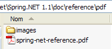 |
此外，还可阅读 [http://tahe.developpez.com/dotnet/springioc]，这是一份基于 VB.NET 背景的 Spring 教程。